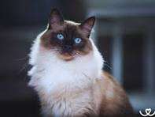

Ragdollové jsou známí svou velmi klidnou a přátelskou povahou. Jsou to mazlivé kočky, které se rády nechávají chovat a často se uvolní v náručí jako „hadrová panenka“ – právě odtud pochází jejich jméno. Jsou společenské, silně se vážou na své lidi a často je doprovázejí po domě. Ragdollové bývají trpěliví, snášenliví a dobře vycházejí i s dětmi nebo jinými zvířaty. Celkově jsou to mírné, oddané a velmi klidné kočky, které milují lidskou společnost.
Ragdollové jsou známí svou mimořádnou důvěřivostí vůči lidem. Často vítají i cizí osoby bez známek strachu a nechají se snadno pohladit nebo vzít do náruče. Tato jejich povaha je roztomilá a přátelská, ale může být i nebezpečná, zejména pokud se pohybují venku. Neumějí odhadnout riziko a mohou se stát snadnou kořistí nebo se ztratit. Proto je pro ně bezpečnější žít převážně doma, kde se cítí jistě a v klidu.
 Přehrát video